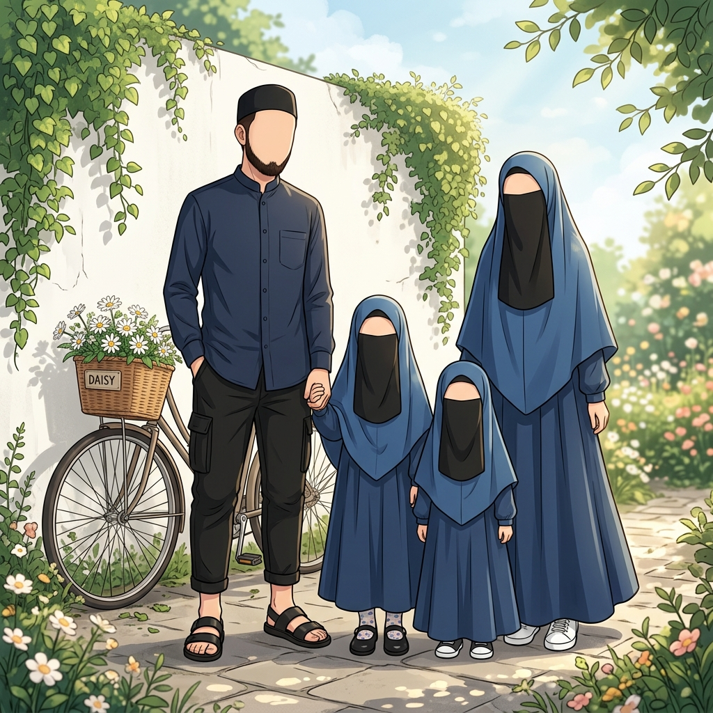

Assalamu'alaikum Warahmatullahi Wabarakatuh.
بِسْمِ اللَّهِ الرَّحْمَنِ الرَّحِيم
الْحَمْدُ لِلّٰهِ الَّذِيْ أَنْعَمَنَا بِنِعْمَةِ الْإِيْمَانِ وَالْإِسْلَامِ. وَالصَّلَاةُ وَالسَّلَامُ عَلَى سَيِّدِنَا مُحَمَّدٍ وَعَلَى آلِهِ وَصَحْبِهِ أَجْمَعِيْنَ. أَمَّا بَعْدُ
الْحَمْدُ لِلّٰهِ الَّذِيْ أَنْعَمَنَا بِنِعْمَةِ الْإِيْمَانِ وَالْإِسْلَامِ. وَالصَّلَاةُ وَالسَّلَامُ عَلَى سَيِّدِنَا مُحَمَّدٍ وَعَلَى آلِهِ وَصَحْبِهِ أَجْمَعِيْنَ. أَمَّا بَعْدُ
Hai, Saya |
Seorang Software Engineer & Network Engineer dari Gorontalo.

Keahlian & Teknologi
Node.js
CodeIgniter
PHP
Python
Cisco
Proxmox VE
MikroTik